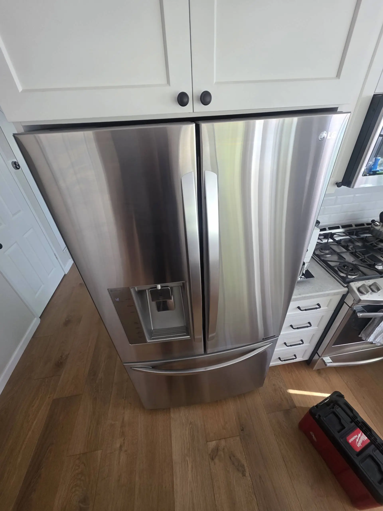

LG Refrigerator Stops Cooling After a Power Outage — Possible Control Board or Compressor Start Relay Failure
An LG refrigerator that stops cooling after a power outage may have experienced an electrical or control-system problem when power was restored. A short outage does not normally cause permanent damage, but voltage fluctuations, surges, or an unstable power supply can affect sensitive refrigerator components. If the interior lights work but the refrigerator and freezer are no longer getting cold, the problem may involve the main control board, compressor start relay, temperature sensors, or another part of the cooling system. Understanding the likely causes can help determine whether the refrigerator needs a simple reset or professional repair.
Start by performing a basic power reset. Unplug the refrigerator from the electrical outlet and leave it disconnected for several minutes. Then reconnect it directly to a properly functioning wall outlet. Avoid repeatedly switching the refrigerator on and off because the compressor needs time for internal pressures to equalize before it can restart normally. After restoring power, listen for signs that the cooling system is operating. You may hear fans running, clicks from the compressor area, or the compressor starting. The refrigerator will not become cold immediately, so allow several hours to determine whether normal cooling has resumed. If the refrigerator remains warm after the reset, further diagnosis may be necessary.
The main electronic control board is responsible for coordinating many refrigerator functions, including compressor operation, fans, temperature regulation, defrost cycles, and communication between sensors and other components. A power surge during an outage or when electricity returns can damage electronic components on the board. In some cases, the refrigerator may still have working interior lights and a functioning display even though the cooling system is no longer operating correctly. Symptoms of a control board problem can include a refrigerator that does not start cooling, fans that fail to operate, unusual cycling, incorrect temperature readings, or a compressor that does not receive the proper command to run. Because several other failures can produce similar symptoms, the control board should not be replaced based only on the fact that the refrigerator is warm. Voltage, wiring, sensors, and compressor operation should be checked first.

Another possible cause is a failed compressor start relay. The compressor circulates refrigerant through the sealed cooling system and requires an electrical starting device to begin operation. If the start relay fails, the compressor may be unable to start even though the refrigerator has power. One common symptom is a repeated clicking sound from the lower rear section of the appliance. The compressor may attempt to start, followed by a click as the protection device shuts it down. After a short period, the sequence may repeat. A defective relay can prevent the compressor from running and cause both the refrigerator and freezer compartments to remain warm. The relay should be tested according to the specifications for the particular LG model. If testing confirms a failure, replacing the appropriate component may restore compressor operation.
The power outage itself may not be the direct cause of the failure. Electrical conditions when power returns can include voltage fluctuations or surges that place additional stress on electronic components and the compressor circuit. The compressor requires significant current during startup, so a damaged start relay, overload protector, wiring connection, or control board can prevent it from starting correctly. A technician can determine whether the compressor is receiving the appropriate voltage and whether its starting components are operating within specifications. This testing helps distinguish an electrical problem from an actual compressor failure.
Checking both refrigerator compartments can also provide useful information. If the freezer is warm as well as the refrigerator section, the problem may involve the compressor, control board, start relay, condenser fan, or sealed refrigeration system.
If the freezer remains cold while the refrigerator compartment is warm, the problem may instead involve airflow, the evaporator fan, damper system, ice buildup, or a temperature sensor. This distinction can significantly narrow the diagnostic process because the refrigerator and freezer depend on related components to maintain and distribute cold air.The evaporator and condenser fans should also be considered. The evaporator fan circulates cold air through the refrigerator and freezer compartments, while the condenser fan helps remove heat from the refrigeration system near the compressor and condenser. A failed evaporator fan can lead to poor airflow and temperature problems, while a defective condenser fan can cause excessive heat around the compressor and contribute to poor cooling. A fan problem can occur independently of a control board or compressor failure, even if it appears shortly after a power outage. Electrical testing can help determine whether the fan motor is receiving power and whether the motor itself has failed.
If the refrigerator starts operating normally after power is restored, give it several hours to return to its normal temperature. The appliance should not be judged immediately after an outage because the cooling system needs time to remove accumulated heat. Keep the refrigerator and freezer doors closed as much as possible during this recovery period. Frequent door openings allow warm air into the cabinet and increase the workload on the cooling system. Food safety should also be considered. If refrigerated or frozen food has remained at unsafe temperatures for an extended period, follow appropriate food-safety recommendations rather than assuming that restoring power will make the food safe.
A failed start relay does not automatically mean that the compressor itself has failed. If the relay and other electrical components test correctly but the compressor will not start or operate within specifications, the compressor may require additional testing. Compressor replacement is a major repair and should only be considered after the electrical circuit and starting components have been checked. A technician may need to evaluate the compressor windings, start components, control signals, wiring, and sealed refrigeration system. Poor cooling can also result from low refrigerant, a restriction, or another sealed-system problem even when the compressor is running. These repairs require specialized equipment and should be handled by a qualified appliance technician.
If your LG refrigerator stops cooling immediately after a power outage, begin with a safe power reset and verify that the appliance is receiving electricity. If the refrigerator has power but the compressor does not start, repeated clicking occurs, or both compartments remain warm, professional diagnosis is advisable. Possible causes include a damaged main control board, failed compressor start relay, defective overload protector, fan motor failure, wiring problem, or compressor malfunction. Testing the individual components helps prevent unnecessary part replacement and identifies the actual cause of the cooling failure.
A power outage does not automatically mean that an LG refrigerator needs to be replaced. In many cases, the problem can be traced to a specific electrical, starting, or control component. Prompt diagnosis can restore cooling, protect stored food, and prevent a manageable repair from developing into a more serious refrigeration-system problem.